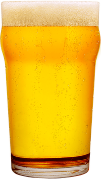
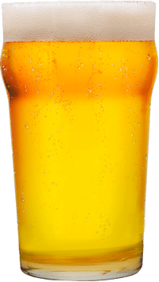
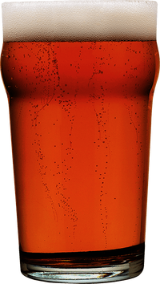
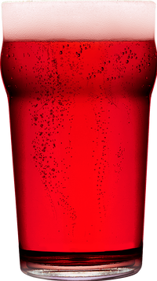
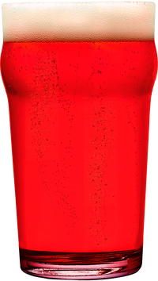
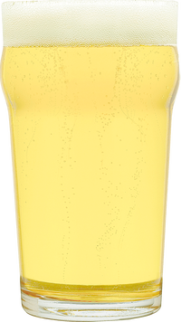
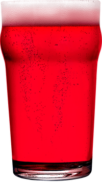

Право претендовать на звание одного из старейших горячительных напитков принадлежит медовухе заслуженно. Её почитали в Древней Греции и Риме, пили викинги, египтяне и даже народы майя. На Руси без медовых напитков не проходило ни одно празднество. Мёд подавали на свадьбах, именинах, и даже применяли как лекарственное средство. История происхождения этого напитка уходит корнями глубоко в прошлое: человек впервые начал собирать мёд ещё до нашей эры. В легендах народов мира питейный мёд считается священным напитком богов.
Вкус напитка разнообразен: он зависит от сорта мёда, выдержки и условий приготовления, пряностей и трав, добавленных в него. Испокон веков питейный мёд готовили с соком ягод и фруктов, настаивали на душистых травах – вариантов напитка великое множество!
А как сейчас обстоят дела с сортами медовухи?
В нашей стране на основе продуктов пчеловодства выпускается под сотню наименований напитков крепостью от 0% до 40%. Российский рынок горячительной продукции в этом смысле уникален. А если учесть гипотетический объём и разнообразие «продукции собственного производства», которую соотечественники изготавливают для личного потребления, не останется никаких сомнений — по части любви к пчёлам, а также к сбраживанию, перегонке и настойке россиянам нет равных. Только почитайте эти домашние рецепты! Ни один продукт жизнедеятельности пчёл не оставлен без внимания. В ход идёт и цветочная пыльца, и перга, и маточное молочко, и прополис, и даже (!) пчелиный подмор с пчелиным ядом*! Было бы что настаивать.
Товарищество пиво-медоваренного завода «МЁДВЕДЬ» (ООО «ФАРТ СПБ») не экспериентирует со здоровьем населения и придерживается принципов классического медоварения. Наша продукция не содержит спирта и пчелиных крылышек, крепость обеспечивается за счёт естественного брожения. Основу медовухи «МЁДВЕДЬ» составляет цветочный или гречишный мёд, патока, натуральные соки, смеси трав и пряностей для придания сортовым напиткам индивидуальных вкусовых и ароматических свойств.
Наш завод выпускает медовые напитки по традиционным рецептам, прошедших многовековую проверку временем. Мы варим и реализуем оптом медовуху «МЁДВЕДЬ» семи сортов:
- СВЕТЛАЯ на цветочном меду, алк. 4,9% об.;
- ИМБИРНАЯ на корне имбиря, алк. 4,9% об.;
- ТЁМНАЯ на гречишном меду, алк. 4,9% об.;
- ВИШНЁВАЯ на ягодном соке, алк. 4,9% об.;
- КЛЮКВЕННАЯ на ягодном соке, алк. 4,9% об.;
- СЛИВОВАЯ на ягодном соке, алк. 4,9% об.;
- ЧЁРНАЯ СМОРОДИНА на ягодном соке, алк. 4,9% об.
Оптовые заказы отгружаем в многооборотных кегах (в собственной таре и таре заказчика), в одноразовой ПЭТ таре объёмом 30 л и в литровых пластиковых бутылках.
Помимо базовой линейки продукции, по запросу дистрибьюторов мы разрабатываем новые оригинальные рецептуры и выпускаем под заказ медовые напитки под частными торговыми марками.
По вопросам сотрудничества, пожалуйста, обращайтесь в отдел продаж. Перейти в раздел Контакты >>
___________
* Не пытайтесь повторить. Употребление несертифицированной алкогольной продукции опасно для жизни и здоровья.